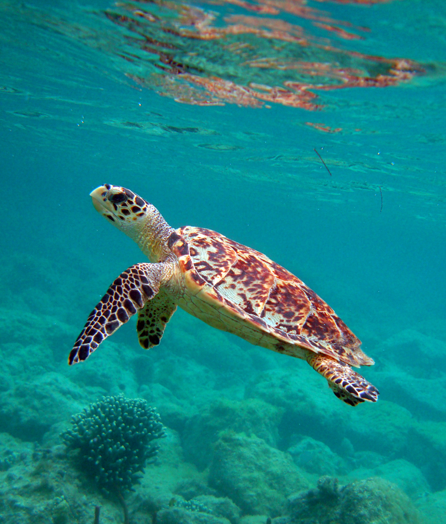
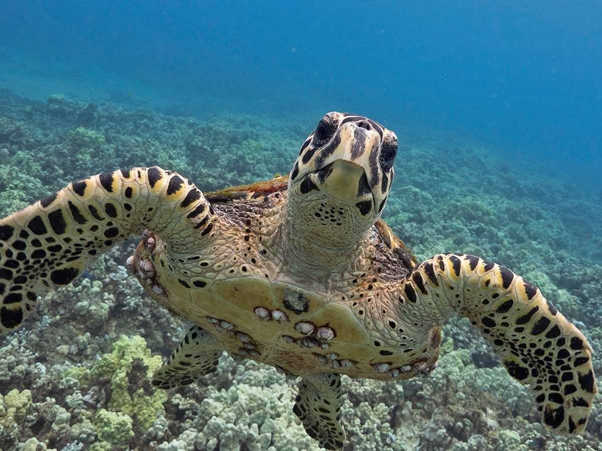
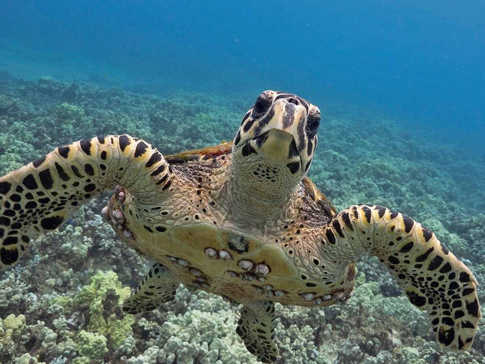

Hawksbill Sea Turtle
The hawksbill sea turtle has an oval-shaped body and is tiny and nimble. The reptile possesses powerful toothless jaws and a raptor-like "beak," hence the name "hawksbill." This beak is ideal for crushing, biting, and ripping food. The carapace is tortoiseshell in color, ranging from dark to golden brown with orange, red, and black streaks. Hatchling shells are typically heart-shaped and brown, measuring one to two inches (2.5 to 5 cm) in length. The bottom shell of the turtle is yellow. The back margin of the top shell is almost always serrated and bears overlapping horny plates called scutes. On its head, the hawksbill has two pairs of prefrontal scales and four pairs of scutes on the sides of its carapace.
| Kingdom | Animalia |
|---|---|
| Phylum | Chordata |
| Class | Reptilia |
| Order | Testudines |
| Family | Cheloniidae |
| Genus | Eretmochelys |
| Species | imbricata |
Appearence
Hawksbill turtles have mottled shells that are a random mix of amber, orange, red, yellow, black, and brown colors. The shells contain serrated edges and overlapping scutes. Their heads taper to a point, and their lower jaw is V-shaped, giving them the appearance of a hawk. Hawksbills can reach shell lengths of 2 to 3 feet and weigh between 100 and 150 pounds when mature. Hatchlings are just about 2 to 3 inches long and predominantly brown. Hawksbills have two pairs of scales between their eyes and four scutes on each side of their carapace.
Behaviour and Diet
Hawksbill turtles are omnivorous (eat both plants and other creatures), however sea sponges are their main meal in many regions. Marine algae, corals, mollusks, tunicates, crustaceans, sea urchins, tiny fish, and jellyfish are also on their menu. Given the scarcity of sponges in Hawaii, they tend to be opportunistic. Their jaw shape and keen beaks let them to reach into small holes and crevices in the reefs to find food.
Hawksbill turtles, like other sea turtles, spend the most of their lives alone, meeting only to breed. Females return to nest on the same beaches where they hatched every two to three years, referred to as natal beaches. In most locations, the nesting season lasts from April to November.

Hawksbill turtles are omnivorous (eat both plants and other creatures), however sea sponges are their main meal in many regions. Marine algae, corals, mollusks, tunicates, crustaceans, sea urchins, tiny fish, and jellyfish are also on their menu. Given the scarcity of sponges in Hawaii, they tend to be opportunistic. Their jaw shape and keen beaks let them to reach into small holes and crevices in the reefs to find food.
Hawksbill turtles, like other sea turtles, spend the most of their lives alone, meeting only to breed. Females return to nest on the same beaches where they hatched every two to three years, referred to as natal beaches. In most locations, the nesting season lasts from April to November.
Lifespan and Reproduction
Hawksbills are projected to attain maturity between the ages of 20 and 35, depending on a variety of conditions, particularly resource availability. Although their life expectancy is unknown, they are thought to survive for 50 to 60 years. Female hawksbill turtles return to breed on beaches in the general areas where they hatched decades ago every 1 to 5 years. Hawksbills typically lay three to five nests per season, each containing 130 to 160 eggs. The nesting season varies according on location, however it usually takes place between April and November of each year. Hawksbills usually lay their eggs at night on narrow, secluded "pocket" beaches with little or no sand and a rocky approach. They normally build their nests high up on the shore, beneath or in vegetation.
The eggs hatch after about two months of incubation in the warm sand, and the hatchlings make their way to the water. Hatchlings orient themselves seaward by crawling away from the darkest shadow of the landward dune or vegetation and towards the brightest horizon. This is toward the broad horizon over the ocean on unspoiled beaches.

 
